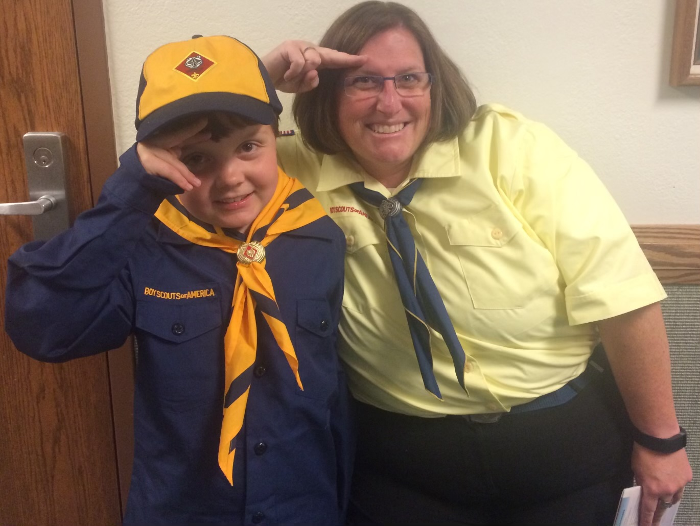
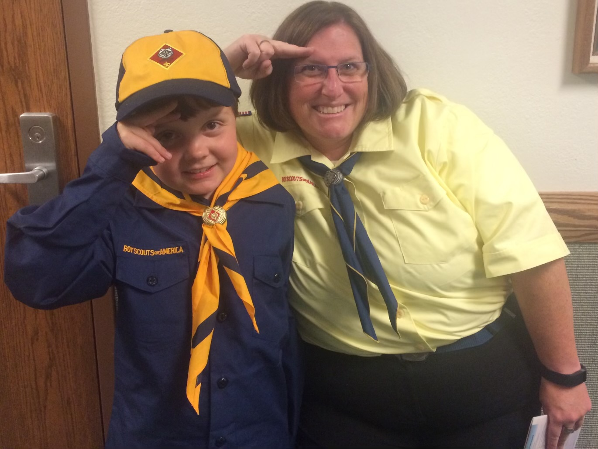
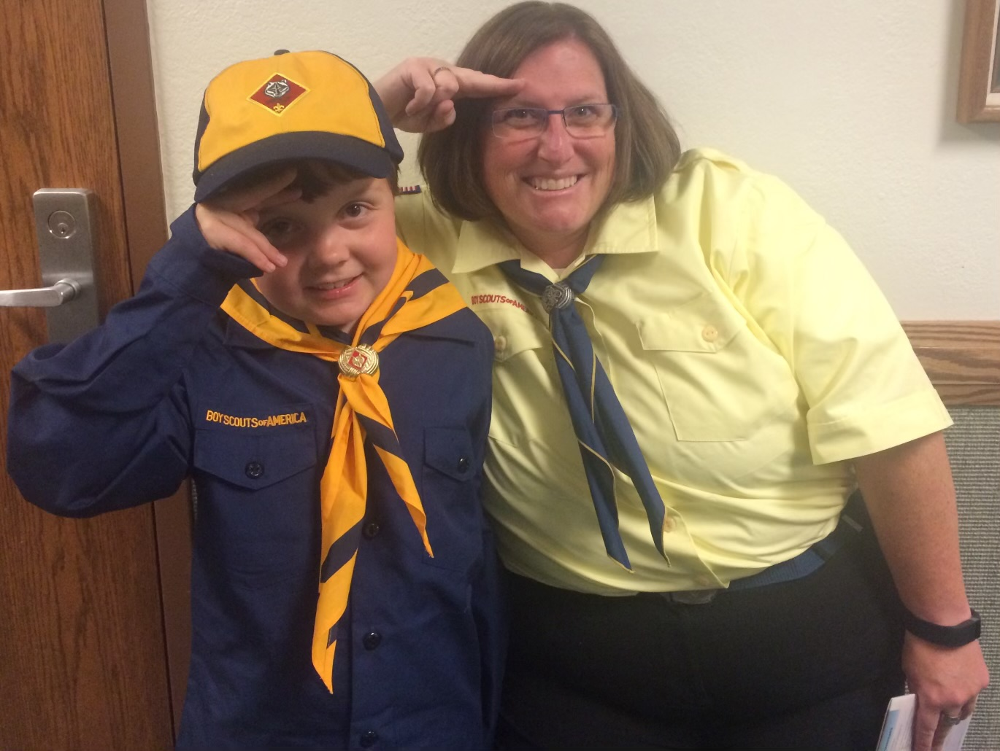

I joined the cub scouts at the age of 8 as a wolf. As I progressed through the program I was a bear than a weblow. I learned many skills through the program like knot-tying and outdoor survival. This program taught me the basics of dedication and gave me a basic understanding of leadership.

I have been rafting and flyfishing since the age of 7. With this, I have rafted the colorado river near they eye of the needle and rancho de Rio at least 10 times a summer and have caught many trout species.
I have been hunting officially sense the age of 11. However, from age 7 my dad has taken me to hunting camp.I am an Archery Deer and Elk hunter and I hunt near Rifle colorado every September.


 
